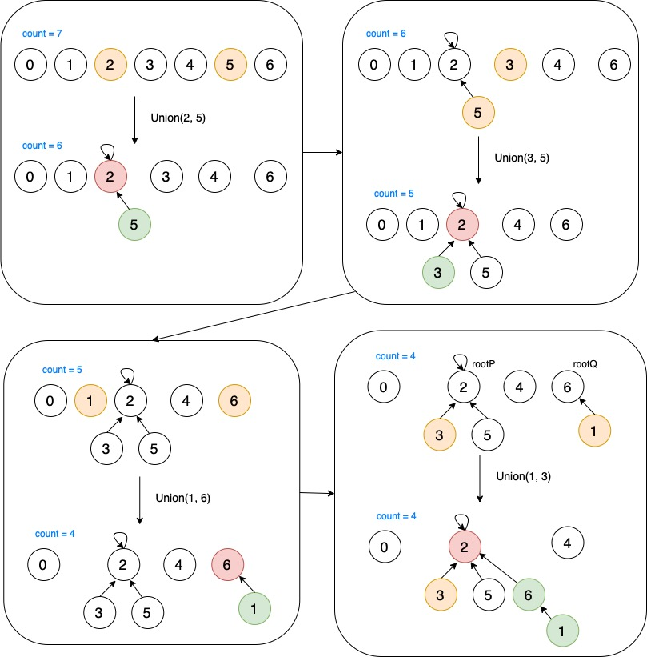

并查集
这篇文章主要讲讲 Union Find1 算法， 也就是我们常说的并查集算法。主要用于图算法中的 动态连通性 。
动态连通性¶
Note
假设输入一连串的整数对，其中一对整数对p和q，它们分别代表不同类型的对象，这对整数对p和q是相连的。则这两个对象可以属于同一个连通分量，而再接收之后的整数对时，则可以判断整数对中的两个元素是否属于同一个连通分量，来过滤掉无意义的整数对，因为如果整数对中的两个元素在同一个连通分量中，则可以肯定的是它们一定是相连通的。
简单来说，这个动态连通性，可以想象成一个图结构，图中的节点有些互相连接，有些不互相连接，如果两个元素相连，则它们具有以下特性：
- Symmetric (对称性): 如果
p与q连接，则q与p也相连 - Transitive (传递性): 如果
p与q相连，q与r相连，则p与r也相连 - Reflexive (自反性): 自身与自身相连
而动态连通性的目标就是要找出无意义的pair，例如一个整数对p与q，如果之前的整数对已经表明他们是相连接的了，那我们就忽略这个整数对，继续处理下一个整数对。
而Union Find主要有以下几个实现：
| Union Find Pseudo Code | |
|---|---|
1 2 3 4 5 6 7 | |
Quick Union 实现¶
在此之前有一个 Quick Find 算法，这个算法中union操作每次都会访问一次数组，所以当连通分量数量很小时，最终的算法时间是平方及的，所以不在这讨论了
思路¶
详细的过程可以阅读一下普林斯顿大学的 cos2262 中讲 Union Find 的 slides，这里我们简单理解一下上面的API。
如果两个节点在不同的分量中，union()操作会将两个分量合并。find()操作会找到给定节点的连通分量标识（也可以理解为它的根节点），connected()操作会找到给定的两个节点的连通分量标识，如果两个连通分量标识相同，则说明两个节点是相连的。count()操作返回了当前连通分量的数量。初始化时，我们有N个连通分量，当操作union()的时候，连通分量的数量就会减一。
实际上，我们在算法中维护两个变量就可以实现：parent[]数组（代表连通分量标识，因为union()实际上是将一个节点的根节点设置为另一个节点根节点的字节点），还有一个是count，代表连通分量的数量，初始化时，count的数量为N。
代码¶
1 2 3 4 5 6 7 8 9 10 11 12 13 14 15 16 17 18 19 20 21 22 23 24 25 26 27 28 29 30 31 32 33 34 35 36 37 38 39 | |
可以参照下面的流程图：

算法分析¶
那么上面实现的这个算法的复杂度是多少呢？从代码上可以看到：connected和union的复杂度都和find函数有关，而find函数则是需要从该节点向上寻找到这个节点的根节点，虽然它是树形结构，但我们不能单纯的说它的时间复杂度是logN（平衡二叉树的高度），但这个可不是平衡二叉树，在极端情况下，这个树形结构可能就会退化成单链表，所以说最坏情况下的时间复杂度可能变成N。
所以说上面这种写法，时间复杂度是O(N)，这个复杂度是很不理想的。因为图论解决的都是数据规模很大的问题，对于union和connected的调用非常频繁，所以线性的时间复杂度效率是不可接受的。
现在的问题就在于如何去避免树的不平衡。
加权 Quick Union 算法¶
我们只需要简单的修改一下 Quick Union 算法 就能保证这种情况不再出现，只要每次union操作时，总是把小的树合并到大的树上，就可以解决这样的问题。所以我们需要一个额外的数组，来记录每个连通分量的大小。
代码实现¶
1 2 3 4 5 6 7 8 9 10 11 12 13 14 15 16 17 18 19 20 21 22 23 24 25 26 27 28 29 30 31 32 33 34 35 36 37 38 39 40 41 42 43 | |
我们通过加入了由节点索引的实例变量数组size[]，这样union操作就能将小树的根节点，连接到大树的根节点，这样算法就能处理数据规模较大的问题了。
我们来看看 Union Find 算法各种实现的性能：
| 算法 | 构造函数 | union() | find() |
|---|---|---|---|
| quick-find 算法 | N | N | 1 |
| quick-union 算法 | N | 树的高度，最坏为 N | 树的高度，最坏为 N |
| 加权 quick-union 算法 | N | lgN | lgN |
| 加权 quick-union 算法 | N | 非常接近但没有到达1 |
思考¶
这样看来，加权 Quick Union 算法的时间复杂度为lgN，看起来是比较理想的状态了，那有没有比这个更好的呢？有没有能达到常数级别的算法呢？
路径压缩的加权 Quick Union 算法¶
路径压缩就是将一个连通分量中的所有节点，都直接连接到根节点上，使树的高度不超过2
| changes in find() | |
|---|---|
1 2 3 4 5 6 7 8 9 10 11 | |
这样实现的话，理想情况下的时间复杂度是1，不过几乎不可能达到，只能是接近1的时间复杂度。
提高¶
- 使用树结构（TreeNode）来实现并查集
引用¶
- Union Find Slides 23